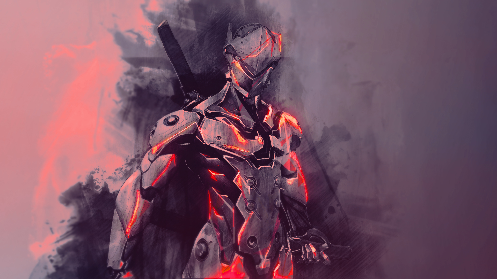

About Genji Shimada
As the youngest son of Sojiro Shimada, the master of the Shimada ninja clan, Genji lived a life of luxury and privilege. He had little interest in the family's illegal businesses, and although he excelled at and enjoyed his ninja training, he spent most of his time pursuing a playboy lifestyle.[2] As Sojori's eldest son, Hanzo had the weight of expectations in a way that Genji did not. However, Genji felt that he was living in Hanzo's shadow
genji being cool
- He got shuriken
- He nanoblade
- He fucks
- He climb
- He dash
Genjis Colligue
he got many friends who are hero he goes on mission with